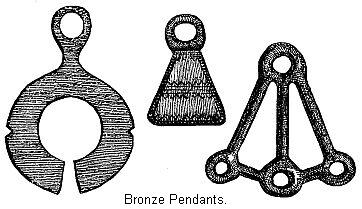
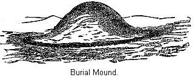

Chapter VII
THE BRONZE AGE IN
EUROPE.1
Races of Men, like Individuals—Gradual
change of Neolithic Age to that of Bronze—The Aryan
family—First Aryans Neolithic—Origin of
Bronze—How Great discoveries are made—Gold the first
metal—Copper Abundant—No Copper Age—The
discovery of Tin—Explanation of an Alloy—Bronze,
wherever found, the same Composition—What is meant by the
Bronze Age—Knowledge in other Directions—Gradual
Growth of Culture—Three Centers of Bronze
Production—Habitations during the Bronze Age—The
Bronze Ax—Implements of Bronze—Personal
ornaments—Ornaments not always made of Bronze—Advance
in Arts of living—Advance in Agriculture—Warlike
Weapons—How they worked Bronze—Advance in
Government—Trade in the Bronze Age—Religion of the
Bronze Age—Symbolical figures—Temples of the Bronze
Age—Stonehenge.
 IS with races of men as with
individuals, the progressive growth of youth soon reaches its
limit and maturity of power. While it brings greater strength, it
has not the buoyancy of early years, so the manner of life
becomes fixed, and onward progress stops. They can then only hope
to hold on the even tenor of their way, happy if increasing years
do not bring again their childhood state. The Neolithic people
entered Europe early in the youth of the race which spread their
civilization over the globe, but the race to which they belonged
appear to have reached their zenith of development long ages ago,
since which time, whatever higher culture they have reached has
been a gift to them by other people. Their energies became
exhausted, and for a long series of years Europe was filled by
the camps, lake villages and fortified places of Neolithic
times.
IS with races of men as with
individuals, the progressive growth of youth soon reaches its
limit and maturity of power. While it brings greater strength, it
has not the buoyancy of early years, so the manner of life
becomes fixed, and onward progress stops. They can then only hope
to hold on the even tenor of their way, happy if increasing years
do not bring again their childhood state. The Neolithic people
entered Europe early in the youth of the race which spread their
civilization over the globe, but the race to which they belonged
appear to have reached their zenith of development long ages ago,
since which time, whatever higher culture they have reached has
been a gift to them by other people. Their energies became
exhausted, and for a long series of years Europe was filled by
the camps, lake villages and fortified places of Neolithic
times.
As to the absolute length of time during which
they inhabited Europe, we have no data to determine. Relatively,
their sojourn, however long, was but a short time compared to the
duration of the old Stone Age. It presents no such evidence of
lapse of ages as can be observed in the older deposits, yet we
may be sure that it was for no inconsiderable period.
The Paleolithic Age was apparently terminated
in Europe by the cold of the last glacial epoch. No such natural
course put an end to the Neolithic Age, but as the strong have an
advantage over the weak, the young over the old, so does a race
young, undeveloped, or in the early maturity of its powers, have
an advantage over the older and more fixed civilization with
which it comes in contact. To understand the causes which
introduced into Europe the Bronze Age, we must refer to the Aryan
race and to Asia.
We have in the preceding chapter briefly
mentioned the Aryan race. They have so much to do with the higher
culture of the Metallic Ages, that it seems not out of place to
refer once more to their origin. The evidence goes to show that
the ancient Aryans inhabited some portion of South-western Asia.
As a race or family, they appear to have been one of the latest
developed. Yet a record of their progress is a record of
civilization.
Unless we reflect, we are liable to be misled
by the expression, recent development. The Hindoos, one of the
latest members of this family, were in India several thousand
years before Christ.2 But however
far back we trace them, we find them in possession of metals.
Aside from this, we know that before the different Aryan tribes
had commenced their migration (with the exception, however, of
the Celts), while they formed but one mass of people, they worked
some of the metals.3 They could
have acquired this knowledge only after the passage of many
years, when they were ignorant of it. This bespeaks a profound
antiquity for the Aryan family.
As we have seen, Europe, while yet inhabited
by Neolithic people, was invaded by a branch of the Aryans. We do
not know the date of this invasion, yet it must have been an
early date, since the Celts separated from the Aryans before the
use of metals. The Aryans have ever been noted as an aggressive
people, and under different names have, in modern times, carried
victorious arms in all quarters of the globe. This is equally
characteristic of the primitive Aryans. Though it is not apparent
that they possessed any higher culture than the people who
already inhabited Europe, yet they everywhere triumphed over them
and possessed themselves of the fairest portion of the Neolithic
domain, driving the primitive inhabitants to those mountainous
regions where their descendants are found to-day.
It is not probable that the Aryan invaders
waged exterminating war against the Neolithic tribes. The
evidence shows that there was considerable mingling of the two
races. It has been suggested, however, that the Neolithic people
who were not driven away were reduced to slavery.4 However that may be, the remains of the
two people are found side by side in chambered tombs and
sepulchral caverns, showing that they dwelt together in the same
area. As before remarked, the Aryan invaders are identified as
the Celts. That it was relatively late in the Neolithic Age when
they made their appearance, is shown by the fact that they had
only reached the English Channel when a knowledge of bronze
caught up with them.
We must now endeavor to learn the origin of
bronze. The impulsive energies of this newer race found vent not
only in conquest over the neighboring tribes, but it is extremely
probable that they are the ones who first compelled nature to
yield up her metallic stores to be of service to man. If the
knowledge of fire was the starting point of human advancement,
surely the knowledge of metals, their useful properties, and how
to extract them from their ores, may lay claim to being the
starting point of our present enlightenment. We have but to
glance around us to see how many of our daily comforts are
dependent on the use of metals. Should we, by any mischance,
become deprived of the use of iron, or of the useful alloys,
bronze and brass, our civilization would be in great danger of
reverting to Savagism. Man, destitute of metals, can do but
little to improve his surroundings; but grant him these, and
victory over his environment is secured.
We can not retrace the exact steps of this
beautiful discovery; we are not sure to what family it is to be
ascribed. Perhaps not to any one alone. Nature may have taken her
children by the hand, and kindly guided their feeble steps in the
line of experiments leading up to this knowledge, and, finally,
one family, more fortunate than the others, succeeded in the
attempt. All great discoveries have been approached in different
directions, by different people. No sooner is it made than this
fact appears, and people widely separated by time and place are
found to be on the verge of the same great truth. It was probably
so at the discovery of metallurgy.
The Turanian tribes, who had so long inhabited
Europe, were suddenly confronted by the victorious hosts of the
Celts, the vanguard of the Aryans, the precursors of a higher
culture. The movements of these primitive people could not fail
to have a great effect on the human mind. It would become alert,
keen, and active. Such was the state of ancient society when a
knowledge of bronze was introduced—a discovery which
consigned stone, hitherto the substance most commonly made use of
to advance human interests, to a subordinate position, and opened
up for man the exhaustless mineral stores of nature.
It is suggested by some that gold was the
first metallic substance employed. Its glittering particles would
attract the attention of primitive man, and little articles of
ornament were early manufactured from it. To be sure, the supply
was very limited; but what there was would serve the useful
purpose of imparting to men some idea of metallic substances.
Portions of it falling in the fire might have suggested the idea
of smelting and of molding—might, at least, have lead to
experiments in that line. The supply of gold existing in a native
state is so small, that no use could have been made of it except
for ornaments.
Iron, we know, is the most abundant mineral.
But it is very rare in a native state, and its ores have nothing
distinguishing about them, and so it is not strange that another
metal received the attention of primitive man. That metal was
probably copper. It is often found in a pure state in nature. In
the Michigan mines of our own country, masses of pure copper many
tons in weight have been discovered.5 No such rich deposits are found in the
Old World; but considerable quantities of native copper were
obtained, and it was by no means a rare metal. Copper possesses
several qualities that would attract attention. It is quite
malleable; that is, it can be easily hammered into shape. We can
imagine the surprise of the old stone-workers at finding a stone
that, instead of breaking or splitting, could be hammered into
shape. By accident, or otherwise it would be learned, in time,
that it could be melted. This would lead to the idea of
molding.
If the above process were followed out, there
would be a real Copper Age preceding that of Bronze: no trace of
such an age has yet been detected in Europe. "But there is,
however, every reason for believing, that, in some parts of the
world, the use of native copper must have continued for a
lengthened period before it was discovered that the addition of a
small portion of tin not only rendered it more fusible, but added
to its elasticity and hardness."6
The absence of a Copper Age in Europe would imply that the art of
manufacturing bronze was discovered in some other locality.
Copper by itself is so soft that it would not
be of much use to man, except the experience they would gain of
melting and molding. In our own country the aboriginal
inhabitants were well acquainted with copper, and even knew how
to mold it. Yet, except as just pointed out, it is not probable
that it exerted any marked influence on their development.7 In the old world supplies of
native copper are limited, and recourse must be had to the ores
of copper. Now these ores, such as copper- pyrites, are nearly
always of a bright color, and as such would attract the attention
of primitive man. They might suspect that these bright colored
ores contained copper from finding similarly colored ores in
connection with native copper, in fact passing from one form to
the other. But it requires no little skill to reduce the ores of
copper; and, when obtained, for reasons just pointed out, it
would not be of great utility. But primitive man was thus
cautiously and experimentally feeling his way to a knowledge of
metallurgy.
All the evidence obtainable goes to show that
tin was known as early as copper, or at least soon after. Its
ores though not striking on account of their color, are on
account of their great weight. It is comparatively easy to reduce
it from its ores. It is quite widely distributed over the earth.
It often occurs in the gravels of rivers, where, as we have
already mentioned, primitive men must have, at a very early date,
sought for gold. Owing to their weight, the gravel of tin-stone
would remain behind with the gold when it was washed. "In process
of time its real nature might have been revealed by accident;
and, before the eye of the astonished beholder, the dull stone,
flung into the fire, became transfigured into the glittering
metal."8
When two metals come together in a molten
state, they often form, not a mixture of the two, part copper and
part tin, for example, but a new compound, different from either,
called an alloy. Copper is, so to speak, a sociable metal, and
readily unites with many different metals—amongst others
with tin, when it forms bronze, the article that marks a new
state in the history of primitive culture. It seems to us strange
that an alloy, a combination of two different metals, should have
been the first used by man, and not a simple metal like iron.
Such, however, is the fact of the case; and we have tried to
point out the probable steps which led up to the invention of
bronze. We can scarcely comprehend the difficulties which
attended the labors of the primitive metal-workers. There were no
books containing the wisdom of many, from which the investigator
could draw his stores of knowledge. and the only way that
knowledge could be disseminated was by word of mouth.
Now, when one man makes an important step in a
discovery, hundreds of earnest workers, some, perhaps, in distant
places, are quickly made aware of the fact, and extend its scope,
or point out its imperfections, and thus hasten on the desired
end. Then, each individual, or community, must, of necessity,
have commenced at the beginning, and the discoveries made would
hardly be perpetuated in the memory of others. There were so many
obstacles to be overcome before a knowledge of bronze could be
acquired, in the then existing state of human knowledge, that it
must ever remain a source of wonder to us, at the present day,
that it was invented at all.
We may picture to ourselves the ancient
copper-worker, after numerous experiments, guided by some good
genius, finally hitting on some process by which, from his mass
of ore, he extracted a nearly pure piece of copper. Having
learned how to reduce these ores, there are many ways in which it
might have been found that a mixture of the two metals would form
a new compound of greatly increased value.
It must have taken a long course of
experiments to determine what proportions of each metal to use to
make the best bronze. It is interesting to know that these early
workers had learned the proportions of each to use, not varying a
great deal from the results of modern research—that is,
from ten to twelve per cent of tin. Bronze relics, no matter
where obtained, whether in the Old or the New World, do not
widely depart from this standard, and such instances as do would
probably denote that the supply of tin became short. This
uniformity of composition would imply that the art of making
bronze was discovered in one place, from which it gradually
spread over the globe.
This fact is a key to the culture of the
Bronze Age. Widely separated communities, destitute of a
knowledge of metals, would instinctively make use of stone. In
this case uniformity of type would not imply community of
knowledge. But a knowledge of metals is altogether different. It
is wonder enough that one community should have hit on the
invention of bronze. The chance would be against its independent
discovery in widely separated areas. They would be more apt to
chance on the production of some other metal. Thus; tribes in the
interior of Africa are said to have passed direct from the Stone
to the Iron Age, a knowledge of bronze not having been carried to
them.
We are thus able to form a true conception of
the Bronze Age. It did not prevail over the world at the same
time. Indeed, as we shall subsequently see, there is every reason
to suppose it spread very slowly, and that it still lingered in
Central and Northern Europe long after its use had been abandoned
for that of iron in the South. Neither, when it was first
introduced, did it put a stop to the use of stone. It was
necessarily costly, and on its first appearance in a country,
brought hither by trade, could only be afforded by rich and
powerful chiefs and warriors. As time advanced, and they learned
to make it cheaper, and each country took up its separate
manufacture, it would gradually supersede stone. But bronze was
never cheap enough to drive out the use of stone altogether. This
only occurred when the art of working iron was discovered.
We shall learn that the knowledge of bronze,
while a very important and distinguishing phase of culture of the
Bronze Age, was not its only characteristic. It was distinguished
by the arrival and spread of the Aryan races, by a great
extension of commerce, by more refinements in the comforts of
life, by the increasing strength of government, which in after
ages flowered out in the mighty nations of antiquity, and
rendered historic, civilization possible.
Some facts stand out with great prominence.
The origin of this culture is lost in the very night of time. We
may be sure that it goes back to a profound antiquity, and that
it extended over a long series of years.
It is evident there was no great and sudden
change from the culture of the Stone Age to that of Bronze. It
was as if the darkness of night had given place to the roseate
light of dawn, to be shortly followed by the full day of historic
times. It was probably introduced by trade. The articles
introduced in this way would consist of simple implements,
weapons, and ornaments. Following after the trade would be found
the smelter with his tools, and, where the conditions were
favorable, local manufactories would be set up. But this home
industry would not prevent importation of more pretentious
articles from abroad. This would account for the rich collections
of shields, swords, and golden cups found in Denmark that betray
an Etruscan origin.
Investigations of recent scholars show that
the bronze of the early Bronze Age came from Asia Minor.
Subsequently there were three great centers of bronze production,
each having certain styles. These were the Russian on the east,
the Scandinavian on the north, and the Mediterranean on the
south. If this view be correct, bronze must have been in use in
the South of Europe long before it was in the North. This view of
the introduction of bronze is, we think, that of the best
scholars in Europe. Others, however, think bronze was brought in
by the invasion of the Aryan tribes. Mr. Keary says: "The men of
the Bronze Age were a new race, sallying out of the east to
dispossess the older inhabitants, and if, in some places, the
Bronze men and the Stone men seem to have gone on for a time side
by side, the general characteristic of the change is that of a
sudden break."9 We have shown
that it was carried to England by an invasion, and it was,
perhaps, so introduced into Denmark, but in other countries of
Europe by trade.10
Let us now see what change in the home life,
in the culture of the people, would be brought about by the use
of bronze. We must reflect that we are not to deal with some new
race, but with the same race that inhabited Europe at the close
of Neolithic times. The people who had triumphed over nature with
their implements of stone were now put in possession of weapons
and implements of greatly increased efficiency. The results could
not fail to advance their culture. We would not expect any great
change in the houses. They would, however, be much better built.
The metallic tools were certainly a long ways ahead of the best
stone implements. With the aid of metallic axes, knives, saws,
gouges, and chisels, their cabins could be increased in size and
appearance. They still built settlements over the lakes, but the
Bronze Age settlements were more substantially built, and placed
farther out from shore. Fortified places were still numerous; the
remains of thousands of them of this age have been found in
Ireland. But the forests were cleared, wild animals disappeared,
society became more settled, and we may be sure that an
increasing number of little hamlets were scattered over the
country.
Caves were resorted to during this epoch only
in times of danger. One at Heathbury Burn, in England, contained
portions of the skeletons of two individuals, surrounded by many
articles of bronze and a mould for casting bronze axes. It is not
difficult to read the story. In some time of sudden danger
workers in bronze fled hither with their stores, but owing to
some cause were unable to escape the death from which they were
fleeing, and their bodies, with their mineral stores, were lost
to sight until the modern explorer made them a subject of
scientific speculations.11
The most important implement was the ax. Our
civilization has originated from many small things. It is
difficult to overestimate the importance of the ax in advancing
civilization. The stone axes, easily blunted and broken, could
have made but little impression on the vast forests of pine, oak,
and beech, covering the greater part of Britain and the continent
in the Neolithic Age. Clearings necessary for pasture and
agriculture must unquestionably, then, have been produced
principally by the aid of fire. Under the edge of the bronze ax
clearings would be rapidly produced, pasture and arable land
would begin to spread over the surface of the country; with the
disappearance of the forests the wild animals would become
scarce, hunting would cease to be so important, agriculture would
improve, and a higher culture inevitably follow. "When first the
sound of the woodman's ax was heard in the forests of the north,
the victory of man over his natural environments was secured, and
the forest and morass became his forever."12
The bronze ax was used for a great variety of
purposes, not only as an ax, but as chisel, hoe, etc. As might be
expected, the oldest axes were simply modeled after the stone
ones. The preceding cut represents these simple forms.
They were inserted into the handle much the
same as they did the stone axes. It never occurred to these
ancient workers to cast the axes with a hole in them for the
handle.
The above cut represents the second form of
the ax. The trouble with the first was that much usage would
inevitably split the handle. To remedy this, a stop or ridge was
raised across the celt, and the metal and the wood were made to
fit into one another. The small figure illustrates this method of
hafting. It would be quite natural to bend the sides of this
second form around, and thus would arise a third form in which
the handle was let into a socket, of which we also give a cut. As
a general thing, bronze axes were plain, but they were sometimes
ornamented with ridges, dots, and lines.
In addition to axes, they of course had many
other implements of bronze. Chisels were made much the same as at
present, except that the handle fitted into a socket. A few
hammers have been discovered in the Swiss lake villages. Bronze
knives of different styles and sizes were quite numerous. The
workmanship on them is generally skillful. They were, as a rule,
fitted into a handle of bone, horn, or wood, and the blade was
nearly always carved. In some cases the knives also ended in a
socket into which the handle fitted.13
In matters of personal ornament, the men and
women of the Bronze Age were as willing to make use of artificial
helps as their descendants to-day, and no doubt fashion was quite
as arbitrary in her rule then as now. Among some savage nations
the dressing of the hair—especially of the men—is
carried to a very elaborate pitch.14 In this respect, some of the dandies
of the Bronze Age certainly excelled. They evidently built up on
their heads a great pyramid of hair; in some cases large enough
to allow of the use of hair-pins two feet long. Of course such a
structure as this was intended to last a life-time. So careful
were they of this head-dress that they used a crescent-shaped
pillow of earthenware, so that it might not be disturbed when
they slept. Dr. Keller, who first described these crescent-
shaped articles, thought they were religious emblems of the moon.
He may be right, as the matter is not yet decided, but some think
they were the pillows in question. At first thought this would
seem absurd, but when we learn of the habits of the natives of
Abyssinia and other savage races, we cease to wonder.
In speaking of the ornaments of the Bronze
Age, a caution is necessary, because ornaments of bronze may
belong to any age. Bracelets and rings have been quite numerous.
The bracelets vary much in shape, are decidedly artistic in
workmanship, and often set off with carved designs. Some of this
shape are composed of a single ring of varying width, the ends of
which almost meet and terminate by a semicircular clasp; others
are a combination of straight or twisted wires ingeniously joined
to one another. "Some of these ornaments remain even up to the
present day in a perfect state of preservation. In an urn from
one of the lake settlements six specimens were discovered, the
designs of which appeared quite as clearly as if they had only
just been engraved."15
We are called on to notice one important point
in reference to these bracelets and rings. That is, they are so
small they could scarcely be worn nowadays; a fact leading us to
infer that the people must have been of small size. It has also
been noticed that the handles of the swords are smaller than
would be convenient for soldiers now. Some ornaments of bronze
were worn as pendants. For this purpose they were provided with a
circular hole, and were probably worn suspended around the
neck.

Ornaments were not always of bronze. Necklaces
were sometimes made of amber, and gold beads were quite common.
We give a cut of both. They are from burial mounds of this age in
England. We remember the ornamentations on implements in the
Paleolithic Age was by engraving animal forms. In the Neolithic
Age they seem to have cared very little for ornamenting. During
the Bronze Age the ornamentation was of a simple but pleasing and
uniform style. It consisted of simple geometrical patterns,
combination of circles, dots, and straight lines. In this next
figure we have given the principal designs found in France.
In the arts of living an increase in culture
is noticeable. We have seen that in Neolithic times they were
acquainted with the use of the distaff. In the Bronze Age they
manufactured woolen cloth. We have but few specimens of this
cloth, because it is under only very exceptional circumstances
that woolen fabrics can be preserved for any great length of
time. From examinations of burial mounds of this period, it would
appear that the better class of people were clad in linen and
woolen. Probably the use of the skins of animals for dress
purposes was mostly discontinued during this age. Woolen cloaks
of this period have been found in Denmark, though probably dating
from near the close.
In agriculture we detect only such advances as
improved implements would suggest. They used the sickle in
gathering in the harvest. We find no implements which we are sure
were used for agricultural purposes. Yet they must have had some
means of preparing the ground for the cereals. The day of wild
animals was gone. In the lake settlements of this age the
domestic animals outnumbered the wild species.16
During this age the horse was used for riding
and driving, and oxen were used for plowing.
The proof of this fact is certain sketches
found in Denmark. But the use of bronze in that country continued
after iron had been introduced in the south of Europe. Pottery
was more carefully made—though the wheel for turning it was
not yet introduced. The shapes were varied and elegant;
sometimes, instead of having a flat base, they came to a point
below—in which case they had to be placed in a support
before they could stand upright. Nearly all the pottery bears the
ornamentation peculiar to the Bronze Age—that is, straight
lines, dots, etc.

During this age, the inhabitants were as much
given to war and conquest as any rudely civilized people: we,
therefore, meet with remains of their weapons. The principal ones
were swords, daggers, spear-heads, and arrows. The swords are
always more or less leaf-like in shape, double-edged,
sharp-pointed, and intended more for stabbing and thrusting,
rather than cutting. No hand guards were used.
Sometimes the handles were fastened to the
swords by means of rivets; and, at other times, the handle was
plaited with wood or bone. They are of different lengths,
intermediate between the sword and the dagger. It is doubtful
whether they made use of shields.
Bronze shields are, indeed, found; but, from
the ornaments and other circumstances they are generally
considered to belong to the Iron Age: for we shall subsequently
learn that the introduction of iron did not prevent the continued
use of bronze. The bow was well known; and this must have
necessitated the use of arrows. Some bronze arrows have been
found; but a flint arrow is nearly as serviceable as bronze, and
much cheaper, so we may be sure they were more common. They also
employed spears and javelins, and the bronze heads of these
weapons are found in various places. The invading Celt found many
camps and fortified places already in existence, and continued
them in use after the original occupant had been driven away.

As we have spent some time in learning the
different objects manufactured out of bronze, it may be of
interest to learn somewhat of their methods of working bronze. We
have already stated how the amateur worker in bronze would follow
on after the trader—and so the objects of bronze would be
made in all the countries of Europe. Molds have been found in
various places. This is a mold for casting the axes having a
socket in which to put the handle. It was found in the cave at
Heathbury Burn, already mentioned. None of the bronze objects
were forged out, as a smith forges out objects of iron—they
were cast. In the absence of steel, it would be almost impossible
to cut bronze; hence it was necessary to make the casting as
nearly perfect as possible. Sometimes the molds were cut out of
stone, as in the figure just given. The molds themselves were, in
this case, difficult to make; besides, they could scarcely be
made so perfect as not to leave a little ridge, where the two
halves of the mold came together, which, as just explained, owing
to the absence of steel, it would be very difficult to remove. In
process of time they discovered an easier way of making the
molds, that employed at the present day—that is, by the use
of sand. The ridge would still remain, and is to be plainly seen
on specimens of ancient bronze.
To overcome the difficulty just mentioned,
they invented a third method of casting, which displays great
ingenuity. A model of the object desired was made of wood or wax,
and inclosed in prepared earth mixed with some inflammable
material, in order that, when subjected to heat, it might become
porous. The whole was then heated until the wax or wood
disappeared. The mold was then ready for use. The great advantage
of this method was that there were no projecting lines of
junction to disfigure the complete implement. This seems to have
been the most common method employed. This explains the fact,
that we seldom find any two bronze objects exactly similar to one
another. Any impression left on the wax model would be faithfully
reproduced. Marks of the spatula, with which the wax was worked,
are frequently found; and, in one case, the impression of the
human finger was observed.17
A people as highly cultured as those of the
Bronze Age must have had some system of government, and one that
was a sensible advance over the government of the Neolithic
people. In the Neolithic Age it was, doubtless, tribe against
tribe. Confederacies, the union of several tribes for common
purpose of defense, must have been more common at this age.18 The first Aryan tribes to arrive
in Europe, as we have seen, were the Celts. In time, they had to
withstand the pressure of invasion themselves. The Belgae, and
other Germanic tribes, were also on the move. But war at this
period would partake more of the nature of people against people,
than of tribe against tribe. The civil and the military
departments of government must have taken more definite shape,
and we are not without evidence of fairly organized and
disciplined forces. As early as two thousand eight hundred years
before Christ, the sea-coast people of Europe, while yet in the
Bronze Age, allied their forces for the conquest of Egypt.19
We have referred to the influence of trade in
shaping civilization. It is commerce that to-day is carrying
civilization to remote corners of the globe. Long before the dawn
of history, it was an active agent in advancing culture. It is
important to note the great expanse of commerce, both inland and
marine, which prevailed during the Bronze Age. An important
article of trade was, of course, bronze. The people who first
learned the secret of its manufacture would speedily find a
demand for their wares from surrounding tribes, and we have
already pointed out how this trade would quickly give rise to
local manufactures. But, to produce bronze, we know tin is just
as necessary as copper—and all the countries of Europe are
not provided with these metals; so more or less trade would
inevitably take place. In various ways the stores of the bronze
merchant might be lost, and only revealed in after years by
accident. One of these deposits, found in France, is evidently
the store of a merchant or trader from Etruria to the tribes of
the north and west, and so gives us a quite vivid idea of the
trade of that early time. It consisted of over four hundred
articles of bronze, "comprising knives, sickles, lance-heads,
horse-bits, rings, buttons, pendants, and bracelets."20
As an article of adornment, amber was highly
prized, not only by the people of Europe during the Bronze Age,
but also by the people of the preceding Neolithic Age. This
caused a trade to spring up which certainly did its share in
enlightening the people. The main supply must have been obtained
from the shores of the Baltic. That the trade was of importance
is evidenced by the fact that amber has been found scattered over
Europe in the tombs of the Neolithic and Bronze Ages.
We have given a passing glance at the religion
of each age we have examined. It must be confessed that great
uncertainty hangs over the results. From a close examination of
their industries, we can gather considerable as to the home life
and general enlightenment of prehistoric times. A knowledge of
religious belief is gathered mainly from a study of their burial
customs. This is a very important part of our investigation,
because a religious belief is one of the exponents of the culture
of a people.
We have seen that in the Neolithic Age the
dead were buried surrounded by implements, weapons, and ornaments
for use in the future life. The descendants of these people
throughout Europe, even in the Bronze Age, would still continue
this custom. The implements buried with the body were more often
of stone than bronze. We must constantly bear in mind that bronze
was costly. This will explain its absence in many cases. It is
interesting to note in this connection that these are "cases in
which it is evident that flint implements were deposited in
graves rather in deference to ancient customs than because they
were still in every-day use."21
We also notice that during this age, often the objects placed in
the graves were, from their shape, obviously not intended for
daily use. This would clearly indicate that the popular mind
became impressed with the fact that these votive offerings,
however freely given, could be of no assistance to the departed,
but they still continued the custom because it was sanctioned by
usage of past years.
But the dead were not always buried during the
Bronze Age, nor, indeed, as a general rule. The invading race
doubtless brought with them a new religion. Many of the
ornamentations on their swords, vases, and other articles, are
supposed by some writers to be religious symbols. From the
frequent occurrence of the circle, and combinations of circles,
it has been suggested that they worshiped the sun. And the
occurrence of customs observable even at a late day, in various
portions of Europe, as pointed out by Prof. Nelson, show that the
worship of the fire-god, or the sun, was once widely extended in
Europe.22 On this point we are
further told: "That even as late as the time of Canute the
Great,23 there is a statute
forbidding the adorement of the sun and the moon."24 So it is not strange that in the new
faith a different method of burial would be followed. That was by
cremation. "The dead were burned, were purified by being passed
through the fire along with their possessions."25 The ashes was then gathered together
and placed in urns and burial mounds and barrows. The votive
offerings of flint and bronze articles in daily use were also
thrown in the fire, and their burnt remains placed with the other
ashes in the burial urn. The cut is that of a bell-shaped barrow
of the Bronze Age.

We have just seen what inferences have been
drawn from the use of the circle as an ornament. This is not the
only sign that has been thought to have some symbolical meaning.
The cross was also used as an ornament, and possessed probably
some religious significance. A third figure which has caused some
discussion was the triangle. "It is, on the whole, very probable
that all these signs, which are not connected with any known
object, bear some relation to certain religious or superstitious
ideas entertained by the men of the Bronze epoch, and, as a
consequence of this, that their hearts must have been inspired
with some degree of religious feeling."26
We have mentioned the use of stone circles in
Neolithic times. During the Bronze Age they built the circle very
large, sometimes twelve hundred feet in diameter, and they were
sometimes made of earth. These circles are regarded by some27 as being simply burial places,
and many of them have been proved to be such. But others regard
them as temples, meaning thereby not a building, in our sense of
the word, but a place of sanctity, and probably where some form
of worship was held. Even if we allow that they were originally
tombs in every case, it does not follow that they have not also
been temples, for the religious sentiment has, in all ages, and
in all places, tended to center in tombs, which ultimately have
become places of worship. Many of our Christian Churches have
originated in this manner, and it is a most obvious transition
from the tomb to the temple. The worship of the spirits of the
dead at the one would naturally grow into the worship of the
Great Unknown in the other.28
The preceding cut is a restoration of one of
the largest of these temples. Here we see a circle twelve hundred
feet in diameter, of upright stones, guarded by both a ditch and
embankment. From the two openings in the embankment formerly
extended two long winding avenues of stone. Between them rises
Silbury Hill, the largest artificial mound in Great Britain,
being one hundred and thirty feet high. The area of the large
inclosure was about twenty-eight and a half acres. This was a
temple of no inconsiderable size. It was, of course in ruins when
the earliest account of it was written, and we can only speculate
as to the lapse of time since it was venerated as a place of
worship.
Stonehenge, on Salisbury Plain, is a better
known ruin, though not on as large a scale as at Avebury. The cut
gives us a restoration of it. The outer circle of standing stones
is one hundred feet in diameter, and when entire consisted of one
hundred stones. These are of sandstone, and were obtained in the
vicinity. A course of stone was laid along the top. We notice
within a smaller circle of stone. The material of these stones is
such that we know they must have come from a distance. Mr. James
tells us that they are erratic—that is, bowlders brought
from the North of Scotland by the glaciers—and that others
of the same kind are still to be seen lying around the country.29 But the more common opinion is
that they were brought there by the people from a distance,
perhaps Cornwall or the Channel Islands. If this be true, it is
evidence of a strong religious feeling, and a peculiar value must
have been attached to the material, since for any ordinary
monument the stones in the neighborhood would have sufficed.
Still nearer the center were five groups of three great stones
each, and immediately within these a horseshoe of smaller stones.
Finally, near the head of the horseshoe, a great slab of
sandstone is supposed to have served for an altar. The date of
the two structures just described has been a matter of some
dispute.
It is worthy of notice that in the immediate
neighborhood of both of them are found a great number of barrows
of the Bronze Age. Over three hundred were erected in the
neighborhood of the latter. In the opinion of many this fixes
their date in the Bronze Age. Stonehenge, in its ruined state,
has formed the subject of no little speculation. Modern
explorers, in connecting it with the Bronze Age, have not
dispelled from it the enchantment of mystery. We must ever wonder
as to the nature of the rites there observed. Our questionings
meet with but feeble response; for though we have learned
somewhat of past times, it is comparatively but little. Ruined
columns, crumbling burial mounds, and remains of stone and bronze
will always be surrounded with more or less mystery—a
striking illustration that science is able to dispel but little
of the darkness which unnumbered years have thrown around the
culture of the past.
REFERENCES
- The manuscript of this chapter was submitted to Prof. Chas.
Rau, of the Smithsonian Institution for criticism.
- Brace's "Races of the Old World," p. 60.
- Brace's "Races of the Old World," p. 61.
- Dawkins's "Early Man in Britain," p. 343.
- "One mass estimated to weigh two hundred tons." Dana's
"Manual of Mineralogy," p. 291.
- Evans's "Ancient Bronze Implements," p. 2.
- Rau's "Anthropological Subjects," p. 89. In his preface to
this collection he asserts his belief, that "former inhabitants
of North America, notwithstanding all assertions to the contrary,
were unacquainted with the art of melting copper." Ibid.,
vii.
- Dawkins's "Early Man in Britain," p. 401.
- "Dawn of History," p. 367.
- For an excellent discussion of this subject, about which
there is yet much uncertainty, we would refer the reader to
Evans's "Ancient Bronze Implements," chap. xxii.
- Dawkins's "Early Man in Britain," p. 355.
- Dawkins's "Early Man in Britain," p. 350.
- "Prehistoric Times," p. 34.
- "Early Man in Britain," p. 351.
- Figuier's "Primitive Man," p. 255.
- Rau's "Early Man in Europe," p. 135, and note.
- Lubbock's "Prehistoric Times," p. 39.
- Morgan's "Ancient Society," pp. 119, 120.
- Dawkins's "Early Man in Europe," p. 449.
- Dawkins's "Early Man in Britain," p. 383.
- Lubbock's "Prehistoric Times," p. 157.
- Lubbock's "Prehistoric Times," p. 74.
- A.D., 995-1035.
- Ferguson's "Rude Stone Monuments."
- Dawkins's "Early Man in Britain," p. 367.
- Figuier's "Primitive Man," p. 283.
- Ferguson's "Rude Stone Monuments."
- Dawkins's "Early Man in Britain," p. 377.
- James's "Stonehenge," p. 3.
Chapter VI: The Neolithic Age in
Europe.
Chapter VIII: The Iron Age in
Europe.